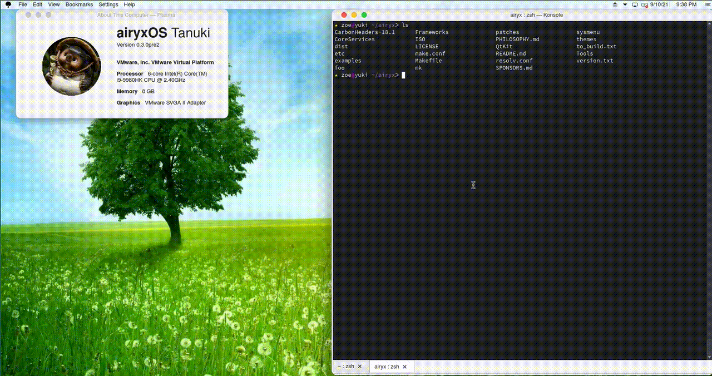
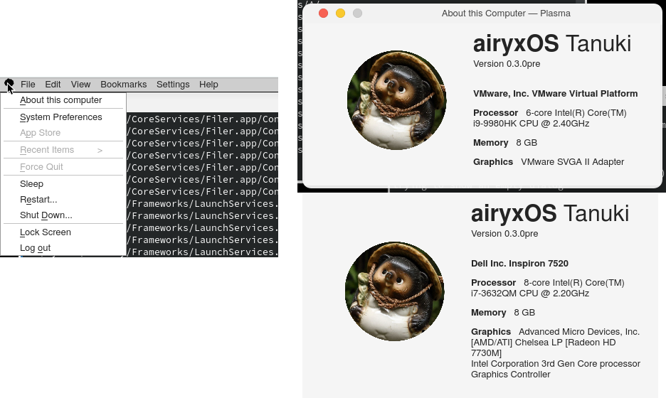
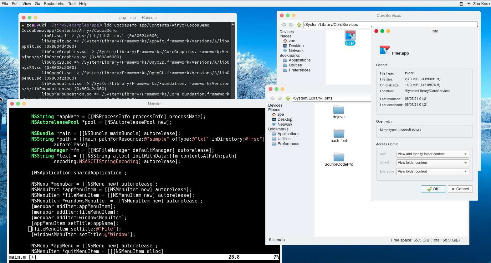

Airyx "Tanuki" pre-release screenshots
Note: these are not the final look - just a preview of what to expect
Fun with the new open command: Reveal In Filer (open -R) and pipe input to default text editor (open -f)

The new system ('tree') menu and About dialog

The new Tanuki splash screen :)
0.3.0pre Plasma Desktop
- Fonts: Nimbus, Source Code Pro
- Icons: Elementary
- Decorations: PlasmOSX
The new Tanuki splash screen :)
0.3.0pre Plasma Desktop
- Fonts: Nimbus, Source Code Pro
- Icons: Elementary
- Decorations: PlasmOSX
Here you can see the source of a Cocoa sample app using AppKit and the runtime dependencies of the resulting executable. Also shown are some screens of the Filer.app
0.3.0pre Cocoa sample app
The Cocoa sample app launched from Filer and showing global menu integration. Also shown is the KDE font viewer and some system fonts.

The 0.3.0pre KDE lock screen